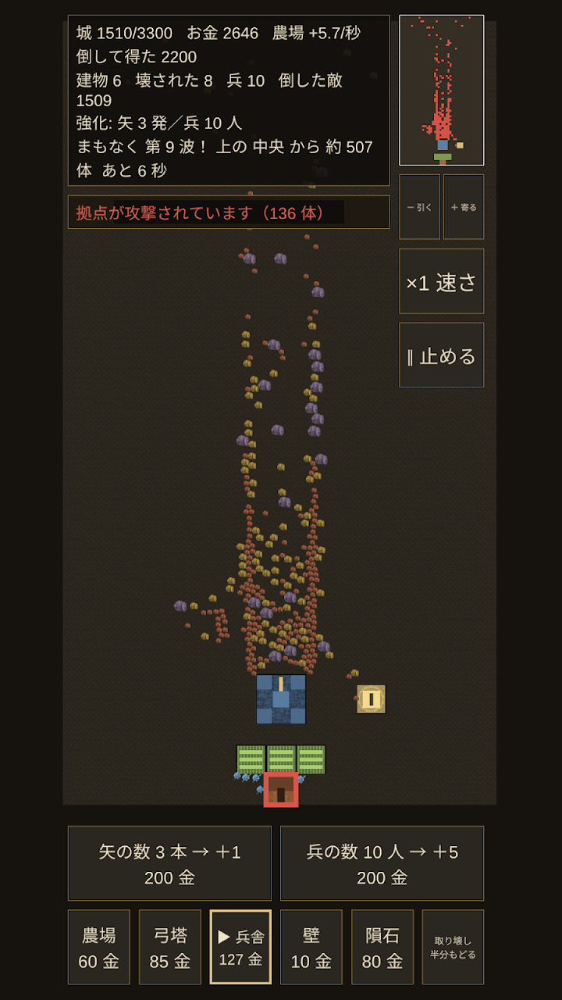
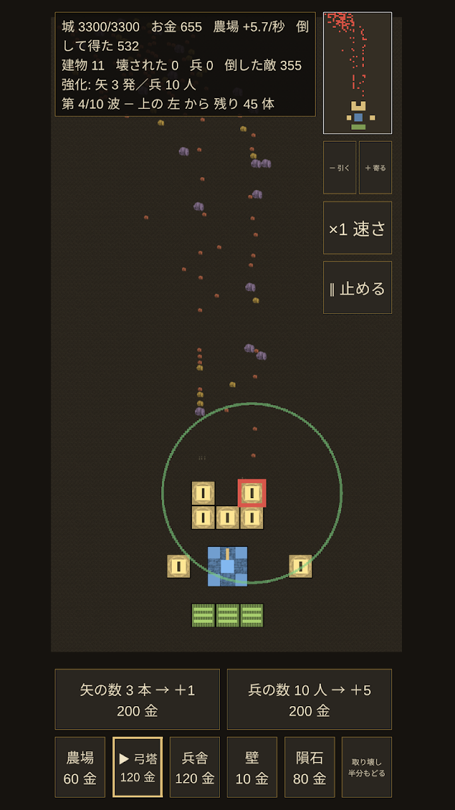
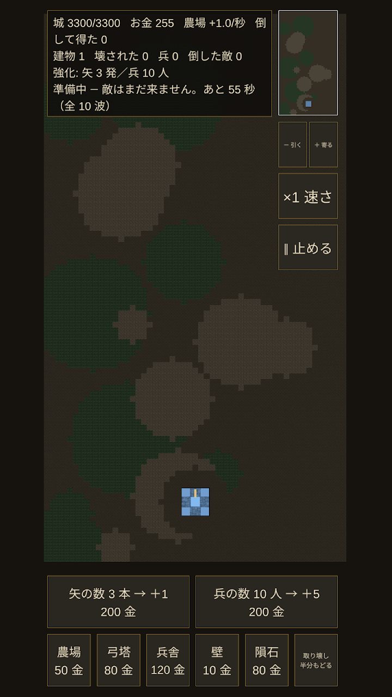
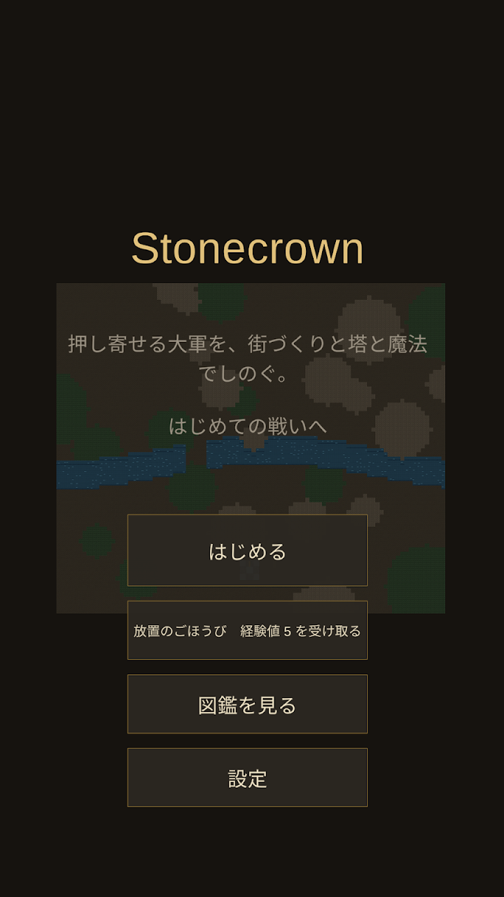
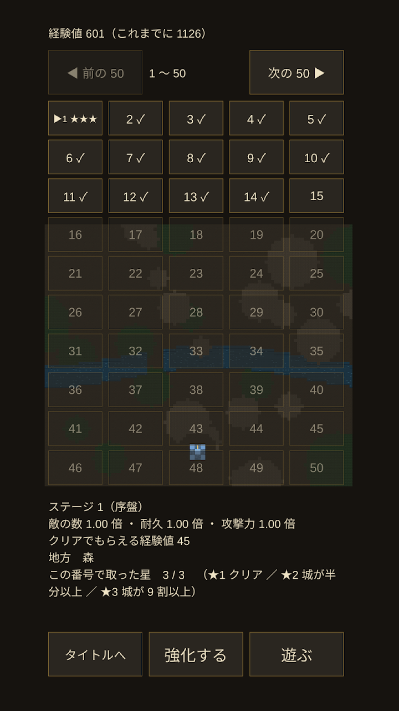
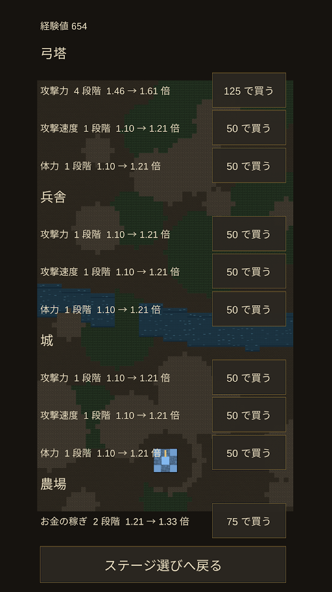
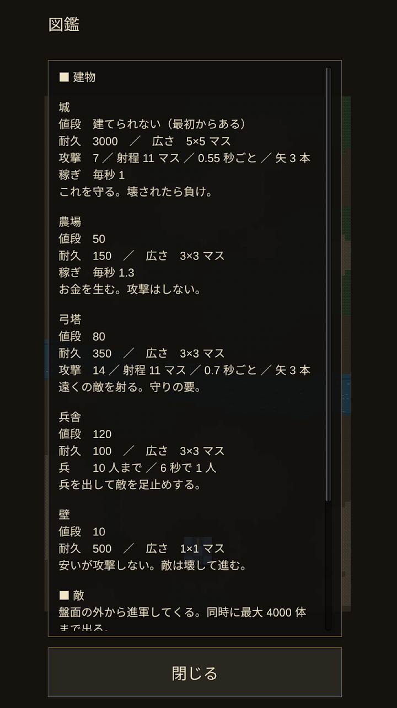
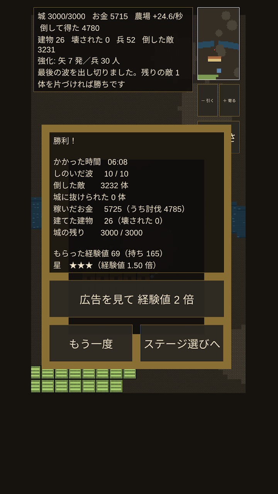

STEAM BASE
STEAM BASEStonecrown 石と王冠
防衛ストラテジーDefense strategy防衛策略防卫策略방어 전략街づくりと塔と魔法で大軍をしのぐ、片手で遊べる中世ファンタジーの防衛ストラテジー。1戦はおよそ5〜10分。A one-handed medieval fantasy defense game: hold back the horde with town building, towers and magic. 5–10 minutes a battle.以建設城鎮、箭塔與魔法擋下大軍，單手就能玩的中世紀奇幻防衛策略遊戲。每場戰鬥約 5～10 分鐘。以建设城镇、箭塔与魔法挡下大军，单手就能玩的中世纪奇幻防卫策略游戏。每场战斗约 5～10 分钟。마을 건설과 탑과 마법으로 대군을 막아 내는, 한 손으로 즐기는 중세 판타지 방어 전략 게임. 1판은 약 5~10분.

スクリーンショットScreenshots螢幕截圖截图스크린샷








Stonecrown 石と王冠 はどんなゲーム?What is Stonecrown 石と王冠?Stonecrown 石與王冠 是什麼樣的遊戲？Stonecrown 石与王冠 是什么样的游戏？Stonecrown은 어떤 게임인가요?
城は 1 つ。道は何本もある。押し寄せる大軍を、どう止めますか。
Stonecrown（石と王冠）は、片手で遊べる中世ファンタジーの防衛ストラテジーです。
1 戦はおよそ 5〜10 分。通勤の途中でも、寝る前の一息でも、ちょうど切りのいい長さです。
遊び方
準備の 60 秒で、街をつくります。
農場でお金を増やし、弓塔で敵を射て、兵舎から兵を出し、壁で道を細くする。
どこにいくつ建てるかが、そのまま勝ち負けになります。
準備が終わると、敵が上から降りてきます。
波はだんだん厚くなり、終盤には数千の敵が地面を埋めます。
守りきれば勝ち。城が落ちれば負けです。
手が足りない時は、空から
魔法「隕石」を落とせます。密集した敵をまとめて薙ぎ払える一撃です。
ただし味方も巻き込みますし、撃つたびに次の 1 発が高くなります。
いつ使うかを迷うところまでが、この魔法の面白さです。
負けても、王国は強くなる
1 戦ごとに街はまっさらに戻りますが、稼いだ経験値は残ります。
経験値で「はじめの所持金」「弓塔の攻撃力」「農場の稼ぎ」を永久に強くできます。
負けた戦いでも経験値は入るので、進めなくなることがありません。
ステージに終わりはありません。進むほど敵は増え、硬く、強くなります。
どこまで行けるかは、あなたの組み立て方しだいです。
こんな作りです
- ステージは無限。地形は毎回ちがう
- 平原・森・雪原の 3 つの地方。雪原では川が凍り、渡られます
- 星 1〜3 の評価。城を無傷で守りきると星 3
- 中断しても、その盤面から続けられます
- 遊んでいない間も、少しだけ経験値がたまります
- 日本語と英語
お約束
- 広告は出ますが、控えめです。割り込み広告は 3 戦に 1 回まで。初めての 1 戦には出しません。「経験値 2 倍」の広告は、選んだ時だけ流れます
- 広告は 1 回の買い切りで消せます。消しても消さなくても、ゲームの強さは変わりません。課金でしか取れない強さはありません
- 通信するのは、広告と購入の確認のためだけ。機内モードでも、最初から最後まで同じように遊べます
- 個人情報を集めません。遊んだ記録はすべて、あなたの端末の中だけに残ります
対象年齢は 13 歳以上です。血や残酷な表現は入っていません。
こんな方におすすめ
- タワーディフェンスや防衛ゲーム、城を守るゲームが好き
- じっくり考える戦略シミュレーションを短い時間で遊びたい
- 負けても少しずつ強くなるローグライト要素が好き
- オフラインで遊べるゲームを探している
One castle. Many roads. How will you stop them?
Stonecrown is a medieval fantasy defense strategy game you can play with one hand. A battle runs about 5 to 10 minutes — the right length for a commute, or for the last quiet moment of the day.
How it plays
You get 60 seconds to build. Farms bring gold, towers shoot, barracks send out soldiers, and walls narrow the roads. Where you put them decides the battle.
Then the horde comes down from the top of the map. Each wave is heavier than the last, and by the end thousands of enemies cover the ground. Hold, and you win. Lose the castle, and you don't.
When your hands are full, call down a meteor
One strike clears a packed crowd. But it hits your own soldiers too, and every meteor makes the next one more expensive. Deciding when to spend it is half the game.
Losing still makes your kingdom stronger
Your town resets after every battle, but the experience you earned stays. Spend it on starting gold, tower damage and farm income — permanently. You earn experience even from a defeat, so you can never get stuck.
The stages never end. The further you go, the more enemies arrive, and the harder they hit. How far you get is a question of how you build.
What's in it
- Endless stages on freshly generated terrain every time
- Three regions — plains, forest and snowfield. In the snowfield the rivers freeze over, and the horde walks straight across
- One to three stars per stage. Finish with an untouched castle for all three
- Put it down mid-battle and pick the same board back up later
- A small amount of experience accrues while you are away
- Japanese and English
Our promises
- Ads, but kept light. Interstitials appear at most once every three battles, and never during your first one. The "double XP" ad plays only if you choose it
- One purchase removes the ads for good. Buying it changes nothing about how strong you are — there is no power you can only get by paying
- The network is used only for ads and to check that purchase. The game plays identically in airplane mode
- No personal information is collected. Your progress stays on your device
Rated for ages 13 and over. No blood, no gore.
城堡只有一座，道路卻有好幾條。你要如何擋下蜂擁而至的大軍？
Stonecrown（石與王冠）是單手就能玩的中世紀奇幻防衛策略遊戲。
每場戰鬥約 5～10 分鐘。無論是通勤途中，還是睡前小憩，長度都剛剛好。
玩法
用準備的 60 秒建設城鎮。
用農場增加金錢，用箭塔射擊敵人，從兵營派出士兵，用城牆讓道路變窄。
在哪裡蓋多少，直接決定勝負。
準備結束後，敵人會從上方降臨。
敵潮會逐漸變厚，到了終盤，數千敵人會布滿地面。
守住就獲勝。城堡陷落就失敗。
人手不足時，就從天上來
可以降下魔法「隕石」。這一擊能將密集的敵人一併掃平。
不過也會波及友軍，而且每施放一次，下一發就會變貴。
猶豫該何時使用，也是這個魔法有趣的地方。
即使戰敗，王國也會變強
每場戰鬥結束後城鎮都會恢復一片空白，但賺到的經驗值會保留。
經驗值可以永久強化「初始金錢」「箭塔攻擊力」「農場收入」。
即使戰敗也能獲得經驗值，所以不會有無法前進的情況。
關卡沒有終點。越往後，敵人越多、越硬、越強。
能走多遠，取決於你的組合方式。
遊戲內容
- 關卡無限。每次地形都不同
- 平原、森林、雪原 3 個地區。在雪原，河流會結冰，敵人可以走過去
- 星級評價 1～3 顆。完好無損地守住城堡就是 3 顆星
- 中途離開，也能從該盤面繼續
- 即使沒在玩的期間，也會累積少量經驗值
- 日語與英語
我們的約定
- 會有廣告，但很克制。插頁廣告每 3 場戰鬥最多 1 次，第一場戰鬥不會出現。「經驗值 2 倍」的廣告只有在你選擇時才會播放
- 廣告可用一次買斷移除。無論是否移除，遊戲的強度都不會改變。沒有只能靠付費取得的強度
- 只有為了廣告與確認購買才會連線。即使在飛航模式下，從頭到尾也能一樣地遊玩
- 不蒐集個人資料。遊玩紀錄全部只保存在你的裝置內
適用年齡為 13 歲以上。不含血腥與殘酷的表現。
推薦給這樣的你
- 喜歡塔防、防衛遊戲、守城遊戲
- 想在短時間內玩到需要好好思考的策略模擬遊戲
- 喜歡即使戰敗也能一點一點變強的 Roguelite 要素
- 正在找可離線遊玩的遊戲
城堡只有一座，道路却有好几条。你要如何挡下蜂拥而至的大军？
Stonecrown（石与王冠）是单手就能玩的中世纪奇幻防卫策略游戏。
每场战斗约 5～10 分钟。无论是通勤途中，还是睡前小憩，长度都刚刚好。
玩法
用准备的 60 秒建设城镇。
用农场增加金钱，用箭塔射击敌人，从兵营派出士兵，用城墙让道路变窄。
在哪里盖多少，直接决定胜负。
准备结束后，敌人会从上方降临。
敌潮会逐渐变厚，到了终盘，数千敌人会布满地面。
守住就获胜。城堡陷落就失败。
人手不足时，就从天上来
可以降下魔法“陨石”。这一击能将密集的敌人一并扫平。
不过也会波及友军，而且每施放一次，下一发就会变贵。
犹豫该何时使用，也是这个魔法有趣的地方。
即使战败，王国也会变强
每场战斗结束后城镇都会恢复一片空白，但赚到的经验值会保留。
经验值可以永久强化“初始金钱”“箭塔攻击力”“农场收入”。
即使战败也能获得经验值，所以不会有无法前进的情况。
关卡没有终点。越往后，敌人越多、越硬、越强。
能走多远，取决于你的组合方式。
游戏内容
- 关卡无限。每次地形都不同
- 平原、森林、雪原 3 个地区。在雪原，河流会结冰，敌人可以走过去
- 星级评价 1～3 颗。完好无损地守住城堡就是 3 颗星
- 中途离开，也能从该盘面继续
- 即使没在玩的期间，也会累积少量经验值
- 日语与英语
我们的约定
- 会有广告，但很克制。插屏广告每 3 场战斗最多 1 次，第一场战斗不会出现。“经验值 2 倍”的广告只有在你选择时才会播放
- 广告可用一次买断移除。无论是否移除，游戏的强度都不会改变。没有只能靠付费取得的强度
- 只有为了广告与确认购买才会联网。即使在飞行模式下，从头到尾也能一样地游玩
- 不搜集个人资料。游玩纪录全部只保存在你的设备内
适用年龄为 13 岁以上。不含血腥与残酷的表现。
推荐给这样的你
- 喜欢塔防、防卫游戏、守城游戏
- 想在短时间内玩到需要好好思考的策略模拟游戏
- 喜欢即使战败也能一点一点变强的 Roguelite 要素
- 正在找可离线游玩的游戏
성은 하나. 길은 여러 갈래. 밀려오는 대군을, 어떻게 막으시겠습니까.
Stonecrown(돌과 왕관)은 한 손으로 즐기는 중세 판타지 방어 전략 게임입니다. 1판은 약 5~10분. 출퇴근길에도, 자기 전 잠깐의 휴식에도 딱 알맞은 길이입니다.
플레이 방법
준비 시간 60초 동안 마을을 만듭니다. 농장으로 돈을 늘리고, 활탑으로 적을 쏘고, 병영에서 병사를 내보내고, 벽으로 길을 좁힙니다. 어디에 몇 개를 세우느냐가 곧 승패가 됩니다.
준비가 끝나면 적이 위에서 내려옵니다. 파도는 점점 두터워지고, 후반에는 수천 명의 적이 땅을 가득 메웁니다. 끝까지 지키면 승리. 성이 무너지면 패배입니다.
손이 모자랄 때는 하늘에서
마법 '운석'을 떨어뜨릴 수 있습니다. 밀집한 적을 한꺼번에 쓸어버리는 일격입니다. 다만 아군도 휩쓸리고, 쏠 때마다 다음 한 발이 비싸집니다. 언제 쓸지 고민하는 것까지가 이 마법의 재미입니다.
져도 왕국은 강해진다
1판이 끝날 때마다 마을은 깨끗하게 원래대로 돌아가지만, 모은 경험치는 남습니다. 경험치로 '시작 소지금', '활탑의 공격력', '농장의 수입'을 영구적으로 강화할 수 있습니다. 진 싸움에서도 경험치는 들어오므로 더 나아가지 못하게 되는 일이 없습니다.
스테이지에 끝은 없습니다. 나아갈수록 적은 늘어나고, 단단해지고, 강해집니다. 어디까지 갈 수 있을지는 당신이 어떻게 짜 나가느냐에 달려 있습니다.
이런 구성입니다
- 스테이지는 무한. 지형은 매번 다릅니다
- 평원·숲·설원의 3개 지방. 설원에서는 강이 얼어 건널 수 있습니다
- 별 1~3개 평가. 성을 무사히 지켜 내면 별 3개
- 중단해도 그 판에서 이어서 할 수 있습니다
- 플레이하지 않는 동안에도 경험치가 조금씩 쌓입니다
- 일본어와 영어
약속
- 광고는 나오지만 절제되어 있습니다. 전면 광고는 3판에 1번까지. 첫 번째 판에는 나오지 않습니다. '경험치 2배' 광고는 선택했을 때만 재생됩니다
- 광고는 1회 구매로 없앨 수 있습니다. 없애든 없애지 않든 게임의 강함은 달라지지 않습니다. 결제로만 얻을 수 있는 강함은 없습니다
- 통신하는 것은 광고와 구매 확인을 위해서뿐. 비행기 모드에서도 처음부터 끝까지 똑같이 즐길 수 있습니다
- 개인 정보를 수집하지 않습니다. 플레이 기록은 모두 당신의 기기 안에만 남습니다
대상 연령은 13세 이상입니다. 피나 잔혹한 표현은 들어 있지 않습니다.
よくある質問FAQ常見問題常见问题자주 묻는 질문
無料で遊べますか?Is it free?可以免費玩嗎？可以免费玩吗？무료로 즐길 수 있나요?
無料で遊べます。広告は控えめで、1回の買い切りで消せます。課金でしか取れない強さはありません。Yes. Ads are kept light and can be removed with a one-time purchase. Nothing that makes you stronger is sold.可免費遊玩。廣告很克制，可用一次買斷移除。沒有只能靠付費取得的強度。可免费游玩。广告很克制，可用一次买断移除。没有只能靠付费取得的强度。무료로 즐길 수 있습니다. 광고는 절제되어 있으며 1회 구매로 없앨 수 있습니다. 결제로만 얻을 수 있는 강함은 없습니다.
オフラインで遊べますか?Can I play offline?可以離線玩嗎？可以离线玩吗？오프라인에서도 즐길 수 있나요?
はい。通信は広告と購入の確認のためだけで、機内モードでも同じように遊べます。Yes. The network is only used for ads and purchase checks; it plays the same in airplane mode.可以。連線只用於廣告與確認購買，即使在飛航模式下也能一樣地遊玩。可以。联网只用于广告与确认购买，即使在飞行模式下也能一样地游玩。네. 통신은 광고와 구매 확인을 위해서뿐이며, 비행기 모드에서도 똑같이 즐길 수 있습니다.
1回どのくらいで遊べますか?How long is a battle?一場大約要玩多久？一场大约要玩多久？한 번에 얼마나 걸리나요?
1戦はおよそ5〜10分です。中断しても、その盤面から続けられます。About 5–10 minutes, and you can resume a battle where you left off.每場戰鬥約 5～10 分鐘。中途離開，也能從該盤面繼續。每场战斗约 5～10 分钟。中途离开，也能从该盘面继续。1판은 약 5~10분입니다. 중단해도 그 판에서 이어서 할 수 있습니다.
iPhone（iOS）でも遊べますか?Is it on iPhone (iOS)?iPhone（iOS）也能玩嗎？iPhone（iOS）也能玩吗？iPhone(iOS)에서도 즐길 수 있나요?
現在は Android 版（Google Play）のみです。App Store（iOS）では配信していません。Not at the moment — it is only on Android (Google Play), not on the App Store.目前僅提供 Android 版（Google Play），App Store（iOS）上沒有上架。目前仅提供 Android 版（Google Play），App Store（iOS）上没有上架。현재는 Android 버전(Google Play)만 제공합니다. App Store(iOS)에서는 서비스하지 않습니다.